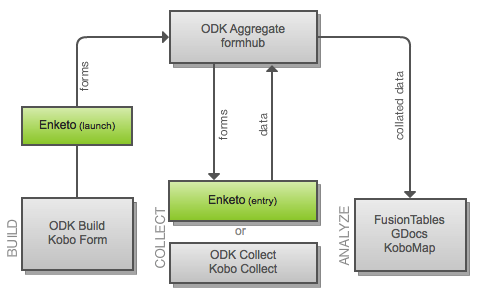

Enketo’s New Architecture
As a follow up to the introduction of enketo and my post about the JavaRosa form format, I would like to explain the new architecture of enketo. Development work is progressing steadily. Most of the hard stuff in transforming the XML forms into HTML5 forms has been completed using the power of XSLT (wow!), PHP and JavaScript. There is a still a lot of work remaining with other aspects of the application.
For those familiair with the Open Data Kit, formhub or Kobo Toolbox, the following (slightly simplified) diagram should clarify how enketo will fit into these systems.

Basically, enketo will provide a web-based alternative to ODK Collect or Kobo Collect for situations in which ensuring the availability and/or use of Android devices is not feasible or appropriate. It will seamlessly fit into existing systems that use ODK Aggregate. It will of course be able to launch and work offline in modern browsers and will therefore be suitable for situations where Internet connectivity is intermittent.
The launch component validates the forms and facilitates user testing before the forms become available to the enumerators to collect and enter data. A simplified version of this component will be made available in July/August (depending on other engagements) to a limited audience of ODK users. It will allow users to transform and play with their existing JavaRosa forms and hopefully provide me with some useful feedback (send me a message or reply to this post if you’re interested in helping with this).
In the future, depending on the need, there could be an integrated enketo build and analysis component and maybe even a (fast PHP) version of a JavaRosa-compliant server to replace ODK Aggregate. Thankfully, this is not a priority as it is great to be able to use the facilities provided by ODK and Kobo (as well as by some other very interesting players such as formhub). I am particularly impressed with the current ODK Form Builder (tip: you don’t have to sign in to play around with this, just click cancel).
[Edit: Replaced Rapaide with enketo]